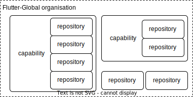

inner source
Codebase Governor is automation that:
It enables the management of repository settings via YAML file config and a secure pull-request workflow (“GitOps”) rather than manually in the GitHub UI.
codebases/codebase-governor/._defaults.yml file in this YAML format. This includes defining an owner and maintainers for the capability.A “capability” is the way repositories are grouped and organised within Flutter-Global.

Example: The Global Betting Platform is a collection of capabilities that can be used together as a betting platform. Cashout is one of those capabilities. The Cashout capability consists of several repositories related to bet cashout: separate quoting and transacting services, integration test suites and operational reconcilation tools.
A capability is simply defined as a directory in the org-config repository that contains repository config files. The repository config files a capability directory contains are the members of the capability.
codebases/
cashout/
_defaults.yml
fcq-service.yml
sco-service.yml
reactive-kafka-lib.yml
codebases/<your-capability-name> containing the relevant repository config files you want as members of that capability._defaults.yml file in this YAML format.The previous version of codebase governor used dedicated capability repositories and a configuration file called codebases.json. In the current version of codebase governor managing your own capability repository is no longer required. All configuration is now in the org-config repository. If you are migrating from v1 an automated workflow is available to help you migrate.
Access and branch protection for a repository can be defined in the org-config repository in a repository config file.
codebases/<capability name>/<repository name>.yml.As a member of the Flutter-Global org you will automatically be granted write access to the org-config repository. The config from the main branch will be applied to your repository, so to edit your config you need to make changes to the files in the main branch.
org-config follows GitHub Flow so the main branch is protected and for security reasons you cannot commit and push changes directly to this branch. Instead, create a new branch and make your changes in your own branch. To merge those changes into main raise a pull request to merge those changes into the main branch.
When you raise your pull request your changes will be validated and immediate feedback provided on any errors or problems. In addition the codebase governor will perform a dry run and add a comment to explain the changes you should expect when the pull request is merged. Appropriate reviewers will be added to your pull request depending on what changes you have made. These reviewers will need to approve your request before it can be merged.
Any change you make to your configuration must be approved before the pull request can be merged. The approval rules are:
For example adding a repository to a capability will require the approval of the capability owner and an existing administrator of the repository to be added. If the capability owner is already an admin of the repository to be added, their approval will fulfill both requirements. If the capability owner has raised the pull request to add the repository to the capability their approval is assumed but the pull request will need to be approved by a colleague to fulfill the “2 people involved” requirement. If the capability had no owner or maintainers configured the approval would fallback to the inner source team for approval.
Numerous capability and configuration examples can be viewed in the org-config repository.
main branch.